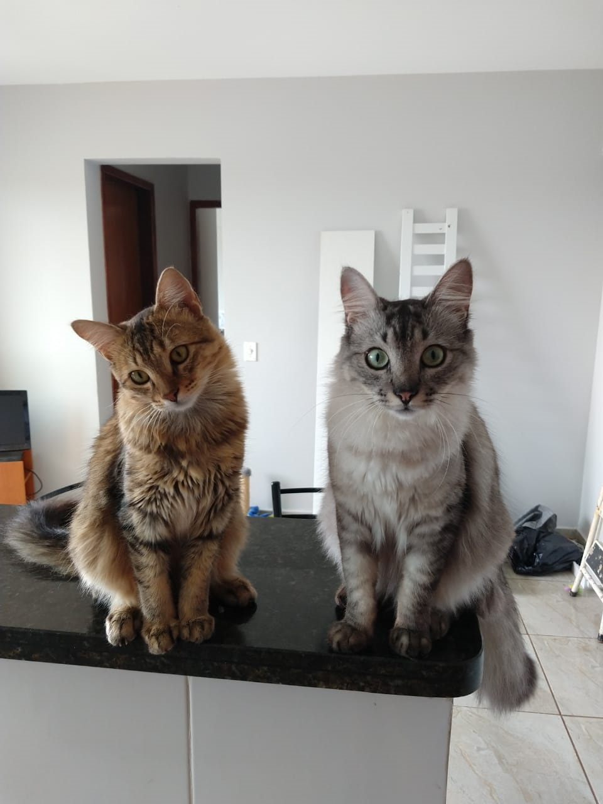

Vlad & Malik
Você já conhece essas figuras?
Vladmir Santos e Malik Soares foram resgatados em anos diferentes (V. em 2019 e M. em 2020), mas parecem irmãos. Passam tanto tempo juntos que parecem ter nascido da mesma mamãe gata... pelagem semelhante, olhos parecidos, mas as personalidades são completamente diferentes.
Clique nos links de cada um para conhecer mais sobre eles!
